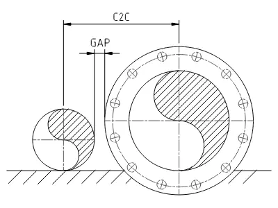
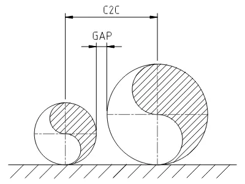

Advanced Pipe Spacing Calculator
User Guide
Purpose and Logic
The Advanced Pipe Spacing Calculator is a tool designed for Piping Engineers. It calculates the minimum Center-to-Center (C2C) distance in mm required between multiple parallel pipelines to prevent physical interference and maintain design clearances as dictated by project specifications and design requirements.
- Staggered Flange Assumption: The calculation logic assumes that flanges on adjacent lines are longitudinally staggered. The C2C distance is determined by the maximum distance required to clear the Pipe-to-Flange profile of both lines, while taking insulation thickness into consideration.
- Calculation Formula: For each pipeline pair, the calculator performs two case studies:
Center-to-Center Calc - Case 1: $$ \text{C2C}_1 = (\text{Rad}_{\text{pipe}_1} + \text{Insul}_{\text{pipe}_1}) + (\text{Rad}_{\text{flange}_2} + \text{Insul}_{\text{flange}_2}) + \text{Gap} $$ Center-to-Center Calc - Case 2: $$ \text{C2C}_2 = (\text{Rad}_{\text{pipe}_2} + \text{Insul}_{\text{pipe}_2}) + (\text{Rad}_{\text{flange}_1} + \text{Insul}_{\text{flange}_1}) + \text{Gap} $$ Final Result: $$ \text{if } \text{C2C}_1 \ge \text{C2C}_2 \text{ ,then } \text{C2C} = \text{C2C}_1 $$ $$ \text{if } \text{C2C}_1 < \text{C2C}_2 \text{ ,then } \text{C2C} = \text{C2C}_2 $$the calculator compares the two values, selects the larger value and displays it as the Center to Center distance between the pipeline pair. Results are rounded up to the nearest 5mm.
- Pipe and Flange Diameters: Data based on industry-standard dimensions for carbon and stainless steel piping.
User Interface
Global Settings
- Gap (mm): The minimum required physical clearance between the widest points of adjacent components (insulation or flange).
- Calculation Logic:
-
Pipe-to-Flange: Factors in flange diameter and insulation thickness when calculating spacing.

-
Pipe-to-Pipe: Flanges are omitted; calculates spacing based strictly on pipe OD and insulation thickness.

-
Pipe-to-Flange: Factors in flange diameter and insulation thickness when calculating spacing.
Pipeline Parameters
- Pipeline Name: Optional label used in DXF drawings and PDF reports.
- NPS: Select the nominal pipe size to automatically assign the correct Pipe OD from the database.
- Class: Select the pressure rating to automatically assign the flange OD from the database. Classes Axxx refer to Series A flanges, while Bxxx refer to Series B flanges.
- Insul / Flg ins (mm): Enter the thickness of insulation for the pipe and flange, if applicable, in millimeters.
- BOP (mm): Used in DXF drawings and PDF reports. By default, pipelines are drawn at BOP +0. If box is checked and a non-zero value is entered, the BOP will be shifted by the specified amount relative to the rest of the pipelines.
Functions
- Download DXF: Exports a DXF (version R12, metric, mm) cross-section drawing. Each entity is on its own layer.
- Download PDF: Exports a report in PDF format, showing the current pipeline setup and respective results.
- Save Setup: Saves your current pipeline configuration locally as a
.jsonfile. - Load Setup: Loads a saved pipeline configuration from a
.jsonfile. - + Add Pipe: Append a new pipeline to the current configuration
- Remove: Delete the selected pipeline from the current configuration
Abbreviations
- NPS: Nominal Pipe Size
- OD: Outside Diameter
- Insul, Ins: Insulation thickness (for the purposes of this webpage)
- Flg: Flange
- BOP: Bottom of Pipe
- Rad: Radius
- C2C: Center to Center distance, in mm